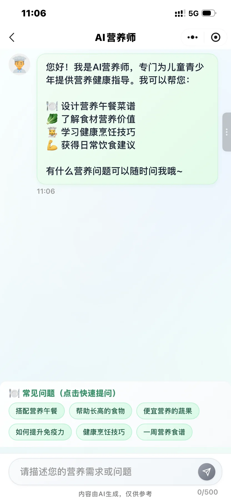
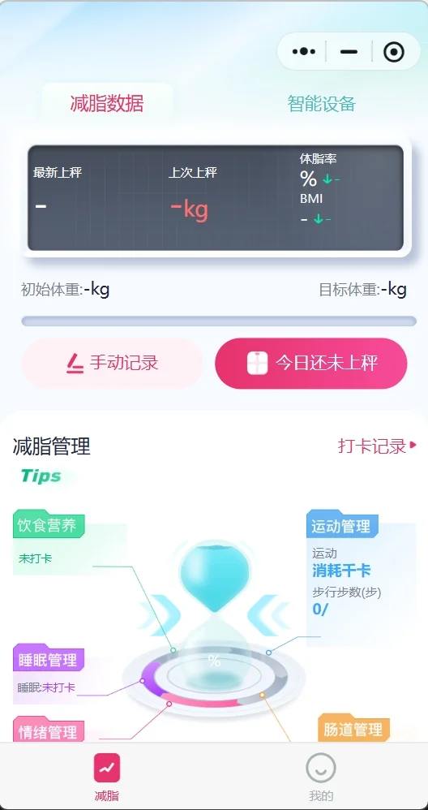

把专业信息，
延续到日常。
围绕健康科普、饮食记录和后续沟通，为专业团队准备更清晰的服务入口。
- 日常健康科普与信息整理
- 膳食记录与阶段回顾
- 专业服务入口与跟进
元概念，为健康服务企业提供 AI 应用能力。
服务医院、营养机构与健康品牌，连接咨询、方案和持续跟进。


服务不同领域的健康品牌与项目
INDUSTRY SOLUTIONS / 行业解决方案
面向医院健康服务、专业营养和体重管理，围绕服务对象与业务流程组织 AI 应用。
PRODUCTS & TECHNOLOGY / 产品与技术
围绕专业团队的工作流程，组合智能咨询、多模态识别、方案辅助与持续服务能力，支持不同品牌和业务场景。
A CONNECTED SERVICE JOURNEY
让信息有记录，让方案可执行，让后续沟通更有依据。
梳理健康目标与日常习惯，形成服务所需的基础信息。
健康档案与需求梳理通过餐食照片与日常记录，帮助专业人员理解真实饮食情况。
膳食记录与营养参考结合人群、偏好和餐次准备食谱，审核后再交付。
食谱推荐与个性定制把执行情况留下来，结合阶段变化开展持续沟通。
打卡、回顾与专业调整CUSTOMER STORIES / 客户与项目案例
医院健康服务、专业营养、儿童健康与体重管理，探索 AI 在不同业务中的应用。
ABOUT US / 关于元概念
元概念是一家 AI 健康管理能力提供商，面向医院、营养机构和健康管理品牌，提供围绕真实业务场景的 AI 应用与技术支持。
我们从服务流程出发，将智能咨询、信息识别、方案准备、健康跟进和内容工具组合到业务中，与客户一起推动健康服务的数字化应用。
我们的理念：让专业营养，走进每一天。
了解合作方式明确服务对象、工作流程与真实需求。
选择咨询、识别、食谱或跟进等适合的模块。
用具体操作检验体验，结合实际反馈持续完善。
CONTACT / 商务合作
从一个具体业务问题开始，讨论适合的 AI 应用方案。
 善搭膳 · 你的 AI 营养助手
善搭膳 · 你的 AI 营养助手GOOD TO KNOW
元概念提供 AI 能力与技术支持，善搭膳是营养服务领域的产品应用之一，连接 AI 营养咨询、食物识别、食谱与营养师服务。
AI 用于信息整理、内容准备与日常问题辅助。食材、份量、个体适用性及专业建议，需要由相应专业人员审核与确认。
可以先围绕一个具体场景讨论，例如餐食识别、食谱准备或专业服务入口，再根据实际需求确定功能边界与交付方式。
可以扫描页面中的善搭膳二维码体验产品，也可以点击“整理合作需求”，生成一份可复制、可下载的需求摘要，便于与你的团队沟通。